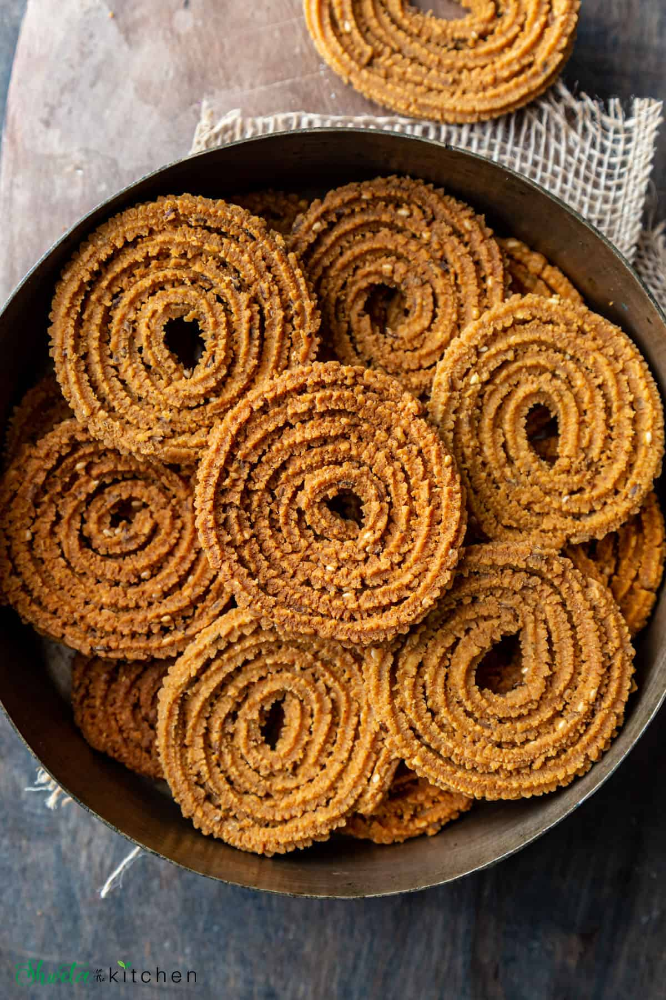

How to make Chakali

Description:-
Chakli It is a deep fried savory snack in the shape of spiral with small spikes.
Ingredients of Chakali:-
- Flour - Rice flour and besan (gram flour or chickpea flour)
- Spices - red chili powder, coriander powder, turmeric, hing (asafoetida), and salt.
- Seeds - carom seeds (ajwain), cumin seeds (zeera), and white sesame seeds (til)
- Fat - Oil, ghee, or butter. This helps make the chakli crispy. Always add hot. I've used ghee.
- Oil - for frying. I prefer using peanut oil.
- Water - Use hot water for making the dough.
- Chakli press - This is the tool we will use to make/shape the chaklis. I got mine from India but linking a similar kind like mine Brass chakli press or a stainless steel chakli press.
Directions:-
- In a large mixing bowl, sift the rice flour and gram flour.
- To it, add the spices (red chili powder, coriander powder, turmeric, hing (asafoetida), and salt) and seeds (carom seeds (ajwain), cumin seeds (zeera), and white sesame seeds (til)). Mix with a spoon (or spatula) to combine.
- Heat ghee (or oil) on stove top or microwave and add to this dry mix.
- Incorporate the ghee(oil) into the flour using hands or spoon. It will form a crumbly texture and the color will change to orangish-yellow.
- Boil some water and use this hot water, some at a time knead a soft pliable dough. Used approximately half cup hot water.
- Rest for 5-10 mins by covering with a wet cloth. Don’t rest for too long as it may get dry.
- Give the rested dough a quick knead one more time and then divide into two equal portions (portions can vary depending on the size of your chakli maker)
- Take the chakli press and add the star disk to it so it's flat and seals the bottom.
- Add one portion of the dough, press so it fits inside the tube. Close and tightly secure the lid/handle of the chakli maker.
- Line a plate or baking sheet with parchment paper or cut individual parchment paper squares for each chakali. This makes transferring to oil easy.
- Press the chakli press to squeeze out the dough and then move in a circular motion to make spirals.
- Make about 4-5 spirals, close to each other for each chakli.
- Break the dough and seal the outside and inside edge (i.e start and end) to prevent them from opening while frying.
- Continue pressing the remaining chakalis in a similar manner. Keep them covered with a wet cloth to prevent drying. Makes 7-8 chaklis of 4-5 round each with one portion.
TO FRY:-
- Heat oil in a frying pan and test the temperature by adding a small piece of the dough. It should rise up gradually in a few seconds.
- If it rises too fast then the oil is very hot and if it doesn't then the oil needs to heat up more.
- Line a baking tray or plate with paper towel and keep it ready.
- Add 1-2 pieces of chakali or as much the pan can hold without over crowding.
- Fry on medium-low heat until golden.
- Drain and then transfer on an on lined plate to drain excess oil. Keep frying the remaining chaklis in a similar manner.
- Crispy and crunchy chaklis are ready!!
Back To Main Page